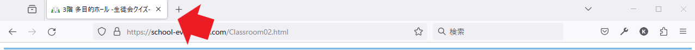

片中トレジャーハントで使ったプログラムの解説
前回の生徒会行事、「片中トレジャーハント」の時のクイズで使ったプログラムについての説明をします。
このプログラムはHTMLとCSSというプログラミング言語を使用しています。
HTMLとCSSは主にWebページを作成する時に使用します。
皆さんが普段Googleなどで検索してアクセスするWebページはすべてこの言語でできています。
HTMLとCSSの違いを簡単に説明するとHTMLはWebページの基盤となるコード。CSSは、見た目を整えるコードです。
実際に使用したコード HTML編
先ほど説明したHTMLを使って作ったプログラムのコードは下記の通りです。
See the Pen Untitled by 関谷奏杜 (@uflsxtmu-the-encoder) on CodePen.
これは、３階の多目的ホールに設置したQRコードを読み込むと表示されたクイズのコードのHTMLの部分です。
＜＞で囲っている部分はタグといい、文章をタグで囲ってプログラムしていきます
titleタグはウェブブラウザでのタブに表示される内容を指します(下の画像)
そして、buttonタグはクイズの選択肢のボタンです
onclickでクリックされた場合の動作を設定します
このプログラムの場合、正解と表示するページと不正解と表示するページを別に作成してあり、そのページに移動するようになっています
このクイズの正解は１の「かくしあじ」なので一番上の「１かくしあじ」を選択すると正解表示のページ、そのほかを選択すると不正解表示のページに移動します。
実際に使用したコード CSS編
次はCSSのプログラムです
CSSのコードは下記の通りです
See the Pen 02 by 関谷奏杜 (@uflsxtmu-the-encoder) on CodePen.
CSSは基本的にタグごとにデザインを設定できます（本格的なWebサイトの場合はタグではなくクラスというものに分けます）